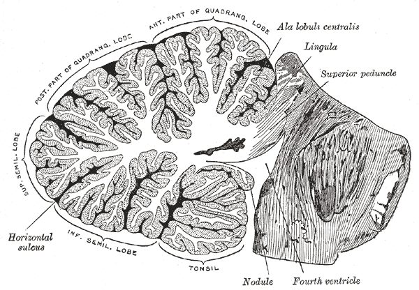

Información divulgativa. No sustituye la valoración de un profesional sanitario. Ante síntomas neurológicos bruscos (boca torcida, debilidad de un lado, dificultad para hablar) llama al 112.


Qué es
Ataxia significa falta de coordinación. Las personas con ataxia tienen dificultad para coordinar los movimientos: caminan con las piernas separadas y de forma inestable, como si estuvieran ebrias, son torpes con las manos, hablan de forma arrastrada o escandida (separando las sílabas) y pueden tener alteraciones de los movimientos de los ojos. Casi siempre se debe a un problema del cerebelo o de sus conexiones, aunque también puede deberse a la pérdida de la sensibilidad profunda (ataxia sensitiva) o del oído interno.
La ataxia es un síntoma con muchas causas. Algunas son agudas y tratables; otras son enfermedades hereditarias y degenerativas, las ataxias hereditarias, que afectan a unas 10 personas de cada 100.000.
Causas
Adquiridas
- Alcohol: la causa más frecuente de ataxia crónica en adultos. Afecta sobre todo a la marcha.
- Fármacos y tóxicos: fenitoína, litio, algunos antineoplásicos, metales pesados.
- Déficits de vitaminas: B1 (tiamina), B12, E.
- Ictus o hemorragia del cerebelo: ataxia de aparición brusca, una urgencia.
- Esclerosis múltiple, tumores, infecciones.
- Autoinmunes: la ataxia por gluten (en personas con celiaquía), la asociada a anticuerpos anti-GAD y las paraneoplásicas, que pueden anunciar un cáncer.
- Hipotiroidismo.
- Atrofia multisistémica de tipo cerebeloso.
Hereditarias
- Ataxia de Friedreich: la más frecuente de las recesivas. Empieza en la infancia o adolescencia, con ataxia, pérdida de reflejos, deformidad de los pies y de la columna, afectación del corazón (miocardiopatía) y a veces diabetes. Se debe a una repetición GAA en el gen FXN.
- Ataxias espinocerebelosas (SCA): dominantes, con más de 40 tipos. Las más frecuentes en España son la SCA3 (enfermedad de Machado-Joseph), la SCA2 y la SCA1.
- Ataxia con repeticiones en RFC1 (síndrome CANVAS): ataxia, neuropatía, alteración vestibular y tos crónica; es una causa frecuente de ataxia de inicio tardío.
- SCA27B (repeticiones en FGF14): descubierta en 2023, de inicio tardío y lenta progresión.
- Ataxia-telangiectasia y otras ataxias infantiles.
Diagnóstico
- Exploración neurológica: marcha, prueba dedo-nariz, movimientos alternos, habla, ojos.
- Resonancia magnética: atrofia del cerebelo, lesiones.
- Análisis: vitaminas, tiroides, anticuerpos de celiaquía y anti-GAD, anticuerpos onconeuronales.
- Estudios genéticos, incluyendo paneles o exoma y la búsqueda de repeticiones.
- Electromiograma para ver si hay neuropatía.
Tratamiento
- Tratar la causa cuando es posible: dejar el alcohol, reponer vitaminas, dieta sin gluten, inmunoterapia en las autoinmunes, tratar un tumor.
- Omaveloxolona: el primer fármaco aprobado para la ataxia de Friedreich (en EE. UU. en 2023 y en Europa en 2024). Frena la progresión de forma moderada.
- Rehabilitación: la fisioterapia de coordinación y equilibrio intensiva mejora la marcha y reduce las caídas. También la logopedia y la terapia ocupacional. Ver neurorrehabilitación.
- Ayudas técnicas: bastones, andadores, adaptaciones en casa.
- En la ataxia de Friedreich, seguimiento cardiológico periódico.
- Se investigan terapias génicas y oligonucleótidos para la ataxia de Friedreich y algunas SCA.
Historia · Medicapedia
La historia de esta enfermedad
Cómo se describió, quién la estudió y cómo ha cambiado su tratamiento a lo largo de los siglos, en Medicapedia, nuestra enciclopedia hermana de historia de la medicina.
Fuentes
- Klockgether T, et al. Spinocerebellar ataxia. Nat Rev Dis Primers. 2019;5:24.
- Cook A, Giunti P. Friedreich's ataxia: clinical features, pathogenesis and management. Br Med Bull. 2017;124:19-30.
- Lynch DR, et al. Safety and efficacy of omaveloxolone in Friedreich ataxia (MOXIe). Ann Neurol. 2021;89:212-25.
- Pellerin D, et al. Deep intronic FGF14 GAA repeat expansion in late-onset cerebellar ataxia. N Engl J Med. 2023;388:128-41.
- Federación de Ataxias de España. Ataxias.